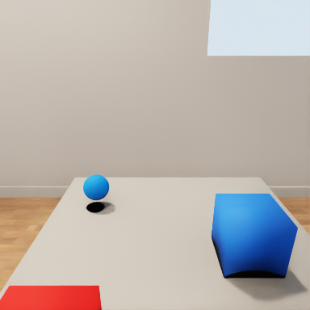
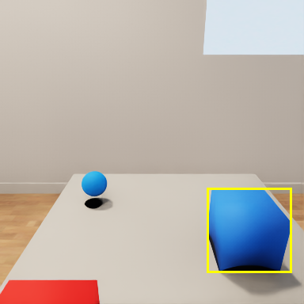
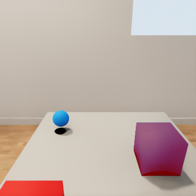
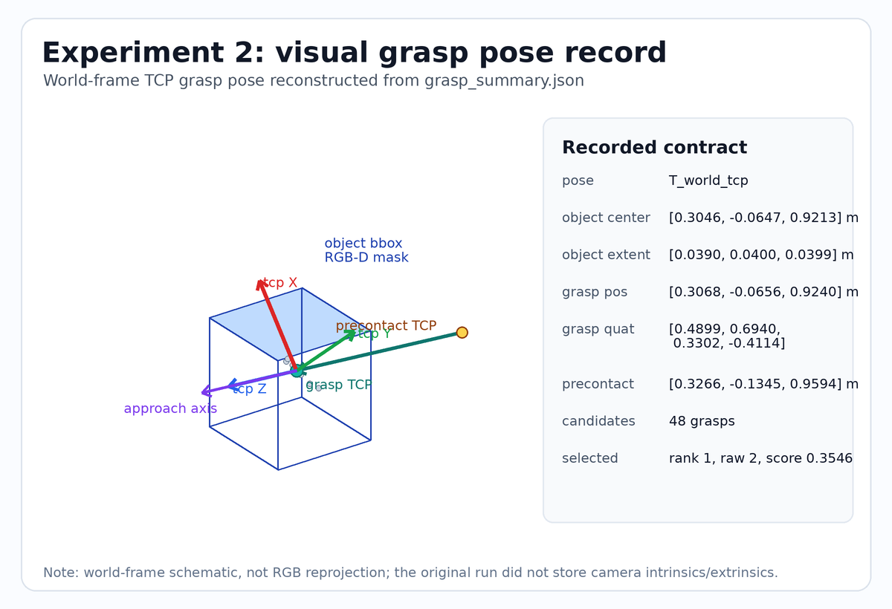

总体进展
X2 已从模型加载推进到可由 CaP-X 高层 primitive 调用并完成桌面 pick-place 任务的阶段。更重要的是，当前工程已经开始从“单次任务跑通”转向“可记录、可诊断、可检索、可修复”的 skill 数据闭环：每次运行都会沉淀视觉产物、抓取候选、动作轨迹、误差指标、视频和失败分类，为后续 ASPIRE-like 的 skill 扩展提供基础。
技术路线
5090 环境约束
CaP-X 自带的 third_party BEHAVIOR 与当前 5090 显卡环境不匹配。解决路线改为独立安装官网 BEHAVIOR，并适配 Isaac Sim 5.1。
修复 BEHAVIOR 自定义机器人导入链路
独立 BEHAVIOR 配通后，发现该版本自定义机器人导入 pipeline 存在问题。已打补丁修复，并对官方 main 与修改导入后的 main 做烟测。
本地补丁提交：0f6705681 Fix custom robot import for Isaac Sim 5.1
补齐 X2 的任务执行条件
X2 原始模型不能自然完成抓取任务。参考官方 Franka + 85 型欠驱动夹爪示例，写了 X2 安装夹爪脚本，并注册带爪/不带爪版本。
形成 CaP-X-b1k 工程分支
在适配后的 BEHAVIOR 基础上，修改 CaP-X，使任务 setup 留在 config/env 层，LLM 代码调用高层 X2 primitive。
当前仓库：https://github.com/programessi/CaP-X-b1k.git
并行沉淀实物路线
吸收 CaP-X 主线思路，配套形成 x2-agent-lab，用于后续 ROS/实物部署。仿真任务和实物部署分开推进，避免相互污染。
引入 ASPIRE-like 的数据闭环
在任务可执行之后，加入 trace bundle、失败分类、候选策略配置和 validation seed。当前实现属于 ASPIRE-lite：保留 ASPIRE 的“记录执行轨迹、检索/比较候选技能、根据失败修复策略、再验证”的工程骨架，尚未声明为论文完整复现。
当前 CaP-X 任务与数据闭环
任务代码负责调用高层 primitive，场景搭建、机器人初始化、视觉链路和动作执行由环境与 X2 API 承载。运行结果进一步写入 trace bundle，用于后续 skill 检索、候选策略比较和失败修复。
pick_and_place_visual_object(...)RESULT = pick_and_place_visual_object(
object_name="blue cube",
target_name="right target",
obstacle_source="rgbd_visual",
place_offset_source="visual_grasp_pose",
reobserve_at_precontact=True,
)
阶段验证
验证组织
本页将验证材料按工程能力拆分，分别对应机器人接入、视觉链路和 ASPIRE-lite 策略验证。视频作为运行记录，视觉中间结果、抓取位姿和误差指标作为主要解释依据。
- 实验 1 展示 X2 导入夹爪后，机械臂和夹爪低级动作可以执行。
- 实验 2 展示视觉 primitive 的中间产物、抓取 TCP 位姿记录和机器人执行视频。
- 实验 3 展示不同 seed 下目标/干扰物位置变化、三条验证视频，以及修复策略带来的成功率提升。
验证范围
验证覆盖模型导入、夹爪执行、视觉感知、动作执行和失败诊断。实验三的三个 seed 使用不同的目标方块位置和干扰物位置，验证策略对小范围布局变化的鲁棒性。
导入夹爪后，X2 具备执行任务的基本动作条件
该实验验证 X2 带 85 型欠驱动夹爪版本可以在 BEHAVIOR/Isaac Sim 中加载、运动、保持末端姿态，并执行夹爪闭合/打开。
- 验证自定义机器人导入和夹爪装配链路可用。
- 验证动作原语调试具备硬件模型基础。
- 为后续视觉抓取任务提供可执行末端执行器。




从视觉输入到抓取位姿
该实验重点展示视觉链路的中间结果：先由相机 RGB-D 输入定位目标，再通过检测和分割得到目标区域，随后利用深度点云估计物体/桌面障碍物，并把 Contact-GraspNet 产生的 TCP 抓取位姿接入动作原语。抓取姿态图由当次 grasp_summary.json 记录重建，展示的是 world-frame 下的 TCP frame。
- OWL-ViT / SAM2 找到目标并分割。
- RGB-D 点云估计目标和桌面障碍物。
- Contact-GraspNet 生成抓取 TCP 位姿，并记录 precontact pose、grasp pose 和 approach axis。
| 位姿参考系 | T_world_tcp，视觉输出和动作 primitive 输入保持同一坐标契约。 |
|---|---|
| 目标估计 | 基于 SAM2 mask 与 RGB-D 深度估计 T_world_object，中心约为 [0.305, -0.065, 0.921] m。 |
| 抓取候选 | Contact-GraspNet 输出 48 个候选，当前策略选择可达且接近稳定验证姿态的 TCP grasp pose。 |
| 选中 TCP grasp pose | 位置 [0.3068, -0.0656, 0.9240] m；四元数 [0.4899, 0.6940, 0.3302, -0.4114]。 |
| 闭合前执行误差 | TCP 位置误差 0.0111 m，姿态误差 0.0340 rad。该记录说明闭合夹爪时末端已基本到达视觉生成的抓取位姿。 |
从失败 trace 到参数级修复
该实验来自 full_strict_gate_20260702_gpu。同一 RGB-D pick-place 任务先用固定 CaP-X baseline 跑 3 个 debug seed，再由 LLM 根据失败报告生成 3 组受约束参数候选。最终选中的 llm_slow_preclose_align 在 3 个 held-out validation seed 上全部完成任务；下方视频使用全局视角，便于观察桌面、方块和机械臂整体运动。
- baseline 在 debug seed 上只有 1/3 成功，两个失败均为
preclose_pose_not_reached。 - trace 显示 IK 解算误差接近 0，失败主要来自闭爪前执行跟踪未满足过严的 2 mm / 0.01 rad 门限。
- LLM 生成的候选只修改高层 primitive 白名单参数，不改底层控制器、视觉模型、IK 或 PyRoKi。
llm_slow_preclose_align将接近/插入动作放慢，增加 hold 和 fine-align，并把 final gate 放宽到可抓范围，因此 debug 从 1/3 提升到 3/3。- held-out validation 最终 3/3，平均抓取前 TCP 误差 2.64 mm，平均放置误差 2.84 cm。
| seed | 目标方块位置 [x,y,z] | 干扰物位置 [x,y,z] | 结果 |
|---|---|---|---|
| val_nominal_shift | held-out 布局扰动 | 目标靠近干扰物但保持可达 | 成功，place error 4.44 cm |
| val_centered | held-out 居中布局 | 目标和干扰物相对位置变化 | 成功，place error 2.05 cm |
| val_right_shift | held-out 右偏布局 | 目标位置偏移但仍在右臂工作空间内 | 成功，place error 2.05 cm |
从失败记录到候选参数
当前参数级 ASPIRE-lite 的作用，是在不改底层 X2 控制器、不改视觉模型、不改 PyRoKi/IK 实现的前提下，把失败 trace 转化为高层 primitive 的候选参数，并通过多 seed 执行筛选出更稳定的一组策略。
| 阶段 | 记录或动作 | 作用 |
|---|---|---|
| 失败 trace | preclose_pose_not_reached、before_close_tcp_error_m、before_close_ori_error_rad、preclose_joint_ok |
判断失败集中在闭爪前位姿跟踪，而不是目标不可达或视觉检测缺失。 |
| failure report | preclose_pose_not_reached |
baseline 的两个失败 seed 都在闭爪前退出，IK FK 误差很小，说明需要处理执行跟踪和判定门限。 |
| repair tags | slow_preclose_align、fine_align_retries、relax_final_gate |
把“到位跟踪偏差”转成可测试的参数修复方向。 |
| 参数候选 | insert_max_joint_step、hold_steps、fine_align_retries、final_tcp_threshold、final_ori_threshold |
保持任务程序结构不变，只改变高层 primitive 的受控参数，使末端慢速接近并允许在可抓容差内闭爪。 |
| 多 seed 验证 | val_nominal_shift、val_centered、val_right_shift |
避免只在单个视频上偶然成功，验证修复策略对小范围布局变化是否稳定。 |
本轮候选过程包含一个重要反例：llm_enable_guarded_reobserve 只成功 1/3，说明单纯启用重观测并不能解决执行跟踪和闭爪稳定性问题。最终被选中的 llm_slow_preclose_align 来自 baseline 失败 trace 的归因：它把“闭爪前到位失败”转化为减小 joint step、增加 hold/fine-align、放宽 final gate 的参数级整定，并在 held-out validation 上达到 3/3。这说明当前系统已经能完成可复验的失败归因和候选筛选，但还不是完整 ASPIRE 的代码级 skill 自修改。
ASPIRE-lite 扩展
ASPIRE 的完整实现尚未开源，当前工作采用工程可验证的 ASPIRE-lite 路线：把 CaP-X 任务运行变成可积累的数据资产，再围绕这些数据做 skill 检索、候选参数搜索、失败归因和小规模 validation。它服务于后续“数据自己进化”的目标，并把单次抓取任务扩展为可迭代的技能改进流程。
已实现的能力
当前实现覆盖 trace bundle、failure taxonomy、skill candidate 配置、LLM candidate proposer、candidate search、validation seed、报告聚合和验收审计。每次任务运行会保存视觉产物、抓取候选、动作执行误差、视频和失败报告。
验证方式
先由 LLM 根据历史 report 和 skill library 生成受约束候选，再在 debug seed 中比较候选策略，记录成功/失败类型，最后将选中的修复策略放到 held-out validation seed 上验证。
验证效果
本轮完整 execute 已完成：固定 baseline 在 3 个 debug seed 上为 1/3，LLM 生成 3 个参数级候选，candidate search 自动选择 llm_slow_preclose_align，并在 3 个 held-out validation seed 上达到 3/3。
- 运行任务并保存 trace bundle：生成代码、primitive 调用、视觉截图、mask、抓取候选、运动轨迹、误差指标和视频。
- 将失败归类到可操作的 failure taxonomy，例如检测失败、分割失败、抓取姿态不可达、preclose 未到达、未夹住、place 偏差过大。
- 根据失败类型检索已有 skill 或构造候选策略，候选优先改变高层 primitive 参数，避免反复改底层控制代码。
- 在 debug seed 上比较候选，再把候选中的最优策略放到 validation seed 上验证。
- 把成功策略、失败原因和指标重新写回报告，形成下一轮检索和修复的输入。
Trace bundle
每次运行保存生成代码、primitive 调用、视觉中间结果、抓取候选、运动 waypoint、误差指标、视频和 failure report。调试对象从“看一段视频”变成“看一份结构化运行记录”。
Failure taxonomy
把失败归因到感知、分割、深度点云、抓取位姿不可达、接近位姿没到、夹取失败、放置误差等类别。
Skill candidate search
候选策略搜索约束在高层 primitive 参数内，包括 grasp candidate、TCP offset、reobserve、place descent 和 place orientation。
Validated repair
baseline 失败集中在 preclose_pose_not_reached。选中的修复策略减慢接近/插入，增加 hold 和 fine-align，并放宽 final reach gate。候选调试中保留了退化策略作为反例，最终 best candidate 在 3 个 validation seed 上全部通过。
| 验证项 | 结果 | 说明 |
|---|---|---|
| validation 成功率 | 3/3 | 输出目录：outputs/x2_aspire_parameter_loop/full_strict_gate_20260702_gpu/ |
| 候选搜索过程 | baseline 1/3 -> best debug 3/3 -> validation 3/3 | baseline 失败为 preclose_pose_not_reached；LLM 候选中 llm_enable_guarded_reobserve 退化到 1/3，llm_try_more_ranked_grasps 为 2/3，最终 llm_slow_preclose_align 在 debug 上 3/3。该对比来自受控候选搜索，不作为大样本统计结论。 |
| 平均 before-close TCP 误差 | 0.0026 m | held-out validation 平均值；说明闭合夹爪前 TCP 已稳定进入可抓范围。 |
| 平均放置误差 | 0.0284 m | 桌面 pick-place 仿真任务可以稳定完成。 |
| 严格 ASPIRE 复现状态 | 部分完成 | 已实现 trace / failure / skill candidate / validation 骨架；完整论文级自动技能发现闭环仍属于后续工作。 |
| LLM 自动候选生成 | execute 通过 | scripts/run_x2_aspire_parameter_loop.py 已串联 baseline、LLM proposal、candidate search、held-out validation 和 audit。候选只使用白名单参数，不能改底层控制、视觉模型、IK 或 PyRoKi。 |
| 维度 | 原 CaP-X 任务执行 | 当前 X2 ASPIRE-lite 扩展 |
|---|---|---|
| 技能入口 | LLM 生成代码调用已有 primitive，重点是完成当前任务。 | 保留高层 primitive 调用，同时把每次调用的参数、结果和失败原因写入可复用记录。 |
| 失败处理 | 失败后主要依赖人工看日志和视频判断原因。 | 失败报告给出 primary failure、suggested repair tags 和相关 trace，便于下一轮检索或构造候选。 |
| 策略改进 | 通常需要人工修改任务代码或 primitive 参数后重新运行。 | 候选策略被结构化成 skill candidate，在 debug seed 和 validation seed 上比较，并沉淀为后续检索对象。 |
| 验证材料 | 以单次任务结果、reward、视频为主。 | 同时保存视觉中间结果、抓取候选、TCP 误差、place 误差、failure taxonomy、candidate report 和多 seed 视频。 |
下一步建议
| 优先级 | 工作 | 验收标准 |
|---|---|---|
| P0 | 固化当前 CaP-X-b1k 稳定版本 | 打 tag，README 指向视频和 metrics，避免后续实验破坏稳定基线。 |
| P1 | 补齐严格 ASPIRE-style 单报告 | 同一个 report 内包含多候选 debug、controlled failure、best candidate、3-seed validation。 |
| P1 | 推进 x2-agent-lab 实物桥接 | 完成相机标定、TCP/EEF 标定、ROS action/trajectory 执行接口、安全停止。 |
| P2 | 增加更多任务 | 从单物体 pick-place 扩展到多目标、多物体、不同摆放位置和更多失败恢复策略。 |